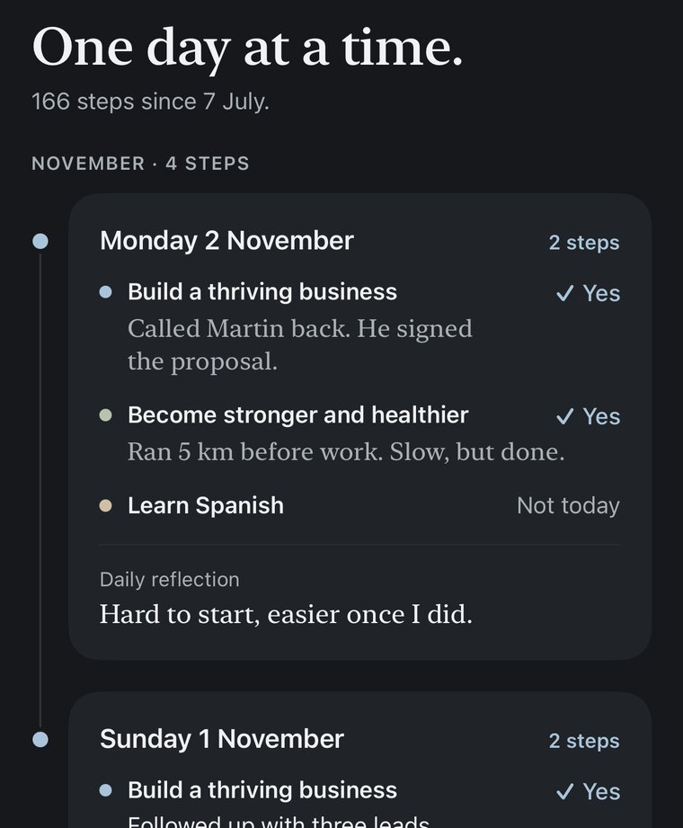

Steps: Goal Journal
A one-line-a-day goal journal for iPhone.
Did you take a step forward today?
Every evening Steps asks whether you moved your goal forward, and you write down in one sentence what you actually did. Once it’s written down, it’s hard to fool yourself, and months later you can read back how you got there.

Free on iPhone.
